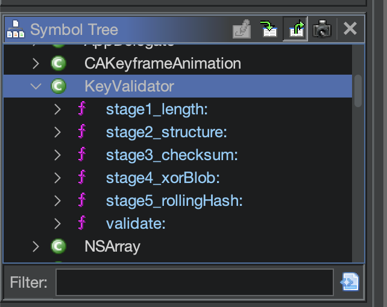
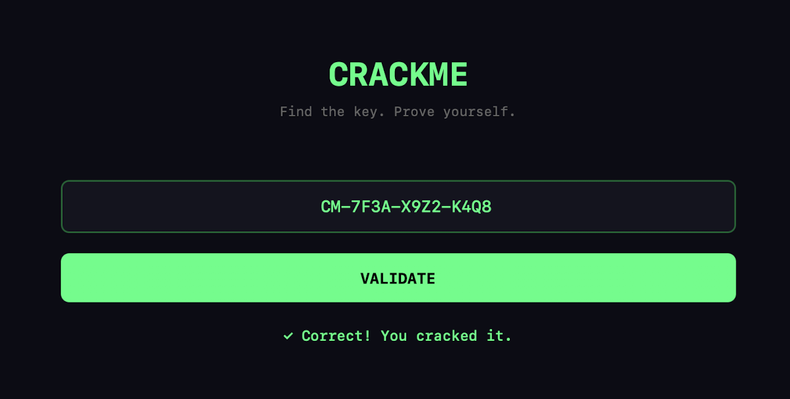

iOSCrackme.ipa is an ordinary ZIP archive. Unpacking it gives Payload/iOSCrackme.app/iOSCrackme, a 99 KB ARM64 Mach-O.
The binary is not encrypted (cryptid = 0 in the load commands), so it can be opened in Ghidra directly.
The first real argument of an Objective-C method is in x2.
I didn't follow a fixed search strategy. I clicked through the function list and jumped around from _entry. Ghidra's Symbol Tree lists Objective-C classes, and that is where I found KeyValidator.
KeyValidator held six methods. From their names it was clear these were the stages of the check.
+[KeyValidator validate:]
+[KeyValidator stage1_length:]
+[KeyValidator stage2_structure:]
+[KeyValidator stage3_checksum:]
+[KeyValidator stage4_xorBlob:]
+[KeyValidator stage5_rollingHash:]
validate: is a short-circuit chain. Each stage is called in turn and its result tested with cbz, and any failure jumps straight to the common exit and returns 0.
The stages don't depend on each other, so they can be solved one at a time.
bl _objc_msgSend$stage1_length:
cbz w0, fail
bl _objc_msgSend$stage2_structure:
cbz w0, fail
bl _objc_msgSend$stage3_checksum:
cbz w0, fail
bl _objc_msgSend$stage4_xorBlob:
cbz w0, fail
bl _objc_msgSend$stage5_rollingHash:I started with stage4_xorBlob:, expecting it to work like the previous crackme. It turned out more complicated, with five stages.
The loop itself is not complicated. For each iteration it fetches a character from the input, XORs it with a key derived from the loop counter, and compares the result against a byte from a table. The XOR key is not constant. It is index + 0xAC, so every position uses a different one, which is what keeps the table from being readable as text.
The reference table sits at 0x100009221 and holds twelve bytes: EA 9E EF 82 E8 88 E8 81 99 FE 82 E6.
I wrote a short Python script inverting the transform, got a clean twelve-character string out of it, and typed that into the app. Rejected.
add x2, x21, #4
bl _objc_msgSend$characterAtIndex:
add w8, w21, #0xac
eor w9, w8, w0
add x8, x20, x21
ldrb w10, [x8, #1]
cmp w10, w9, uxtbstage1_length: explains the rejection in three instructions: cmp x0, #0x11, so the key is 17 characters. My result was twelve. It was a fragment, not the answer.
stage2_structure: then fixes the shape of those 17 characters:
substringToIndex:3 must equal the constant string CM-characterAtIndex:7 and characterAtIndex:12 must both be 0x2D, an ASCII hyphenNSCharacterSet.alphanumericCharacterSetThe alphanumeric check skips positions 0, 1, 2, 7 and 12: the prefix and the two hyphens.
At first I didn't understand how my fragment fit: its first three characters were nothing like CM-.
bl _objc_msgSend$substringToIndex:
bl _objc_msgSend$isEqualToString: ; "CM-"
...
mov w2, #7
bl _objc_msgSend$characterAtIndex:
cmp w0, #0x2d
b.ne fail
mov w2, #0xc
bl _objc_msgSend$characterAtIndex:
cmp w0, #0x2d
b.ne failOnce I saw that the key is 17 characters long and starts with CM-, I understood that my fragment was not the beginning of the key. Then I noticed the first instruction of the stage4_xorBlob: loop body, add x2, x21, #4: the index is offset by four, so the twelve decoded characters occupy positions 4 through 15.
This fits stage 2: CM- in front and hyphens at 7 and 12.
That left two unknown positions: index 3 and index 16.
index: 0 1 2 3 4 5 6 7 8 9 10 11 12 13 14 15 16
C M - ? F 3 A - X 9 Z 2 - K 4 Q ?
^--- stage2 ^--- stage4 covers 4..15stage3_checksum: sums character codes and compares the total against 0x242.
add x20, x20, #2 advances the index by two, so only characters at even positions contribute to the sum.
Index 16 is even, and after the previous sections it was the only even position still unknown. The known even characters sum to 522, the target 0x242 is 578, so the missing character is 56, which is ASCII 8.
bl _objc_msgSend$characterAtIndex:
add x21, x21, w0, uxtb
add x20, x20, #2
bl _objc_msgSend$length
cmp x20, x0
b.lo loop
cmp x21, #0x242
cset w20, eqstage5_rollingHash: hashes the whole key using the constants 0x811C9DC5, 0x01000193 and 0x9E3779B9.
With index 16 resolved, only index 3 was left. I brute-forced it over digits and uppercase letters, and the digit 7 produced the expected value.
h = 0x811C9DC5
a = 0
for c in key:
h = ((h ^ (c & 0xFF)) * 0x01000193) ^ a
a = a + 0x9E3779B9
h == 0x7DB85890The key is CM-7F3A-X9Z2-K4Q8. Entering it in the app confirmed it, which was the only time the binary was executed.
The solver below contains no search at all, for reasons covered in the next section. It derives all 17 characters directly and uses the rolling hash purely as a check.
blob = [0xEA, 0x9E, 0xEF, 0x82, 0xE8, 0x88, 0xE8, 0x81, 0x99, 0xFE, 0x82, 0xE6]
key = ["?"] * 17
key[0], key[1], key[2] = "C", "M", "-"
key[7] = key[12] = "-"
key[3] = chr(0x37)
for i in range(12):
key[i + 4] = chr(blob[i] ^ ((i + 0xAC) & 0xFF))
known_sum = sum(ord(key[i]) for i in range(0, 16, 2))
key[16] = chr(0x242 - known_sum)
candidate = "".join(key)
def rolling_hash(text):
mask = 0xFFFFFFFF
state = 0x811C9DC5
salt = 0
for char in text:
state = (((state ^ (ord(char) & 0xFF)) * 0x01000193) & mask) ^ salt
salt = (salt + 0x9E3779B9) & mask
return state
print(candidate, rolling_hash(candidate) == 0x7DB85890)
The brute force in stage 5 was unnecessary. It turned out later that stage4_xorBlob: checks index 3 directly against a constant before its loop starts. 0x37 is 7.
bl _objc_msgSend$characterAtIndex: ; index 3
and w8, w0, #0xff
cmp w8, #0x37
b.ne failThe binary also contains an AntiDebug class. I noticed it but did not analyze it. The binary was never run under a debugger, so it had no effect here.
This was my first iOS crackme and my first time seeing Objective-C.
This write-up was written with the help of AI, based on my own analysis, notes and reasoning. I also used AI as a reference for documentation during the analysis.
← all writeups